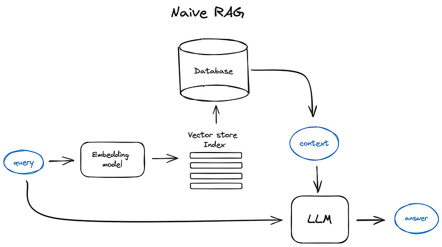

In the ever-evolving landscape of artificial intelligence, the intersection of AI and enterprise applications has seen significant advancements. However, deploying AI systems that are not only intelligent but also adaptive remains a challenge, especially in sectors like finance and law where precision and up-to-date insights are paramount. Traditional generative AI models often fall short in these environments due to their static nature, outdated knowledge, and lack of real-time decision-making capabilities.
Here is where Retrieval-Augmented Generation (RAG) systems come into play. These systems have emerged as a promising solution, but they too have their limitations. In this blog, we’ll explore how we’ve developed a Dynamic Agentic RAG System specifically designed for long, intricate legal and financial documents. This system not only addresses the shortcomings of traditional RAG systems but also introduces novel approaches to retrieval, reasoning, and memory management.
Imagine asking ChatGPT about a niche financial law that was recently passed. The model wouldn’t know about it because it was trained before the law existed. Pretraining or finetuning the model is an expensive option. This is where RAG comes into play. Instead of relying solely on pre-trained data, RAG systems retrieve relevant information from external databases or documents and use Large Language Models (LLMs) to generate contextually accurate responses.

Traditional RAG systems often retrieve information indiscriminately, failing to adapt dynamically based on query complexity. This inefficiency is particularly problematic in financial and legal contexts, where data relevancy is critical. Moreover, these systems treat retrieval and reasoning as separate entities, first performing context retrieval and then providing the context as a prompt to the LLM for reasoning. This approach falls short when dealing with complex multi-hop queries that require interleaved retrieval and reasoning.
To address these challenges, we adopted a multi-agent approach. In this system, different AI agents specialize in distinct tasks, working together to achieve a common goal. This approach introduces specialization, allowing each agent to focus on a specific aspect of the retrieval and reasoning process.
Agents are autonomous systems that analyze and act based on their environment to achieve specific goals. They can retrieve, process, and synthesize information, making decisions dynamically rather than following rigid rules. In our system, we have multiple agents, each specializing in tasks like retrieval, reasoning, and tool handling.
In addition to retrieval and reasoning, our system incorporates tools—modular add-ons that enhance the system’s capabilities. Tools can include calculators, web search modules, chart generators, and more. These tools not only increase the accuracy of responses but also reduce human intervention, allowing the AI to surpass its inherent limitations.
For such an intelligent system to operate at scale, it requires an underlying infrastructure capable of handling massive data flows and real-time computations. Pathway serves as the backbone of our system, offering:
With Pathway, our Dynamic RAG system can operate seamlessly across vast datasets, continuously learning and adapting to new information without compromising speed or accuracy.
The workflow of our Dynamic Agentic RAG System begins with the user providing a query (Q), a set of documents (D), and a set of tools (T). The system then follows these steps:
Retrieving information from large documents, such as financial and legal reports, is challenging due to their inherent hierarchies and diverse entities like tables, charts, and images. To address this, we designed a custom two-stage retrieval pipeline:
We use Jina Embeddings-v3, which is specifically trained for embedding generation in long-context document retrieval. These embeddings are optimized for semantic similarity in multi-page document searches, making them well-suited for page-level retrieval. Given a query Q and a document D with N pages, we generate query embeddings and page-level embeddings, indexing them in FAISS for efficient retrieval of the most relevant pages.
retrieval.query, retrieval.passage, separation, classification, and text-matching. Each adapter is optimized for different subtasks like query embedding, passage retrieval, and semantic similarity, ensuring high-quality embeddings.BaseEmbedded class to incorporate Jina Embeddings using API calls.Documents often contain tables and images that hold critical information. To capture this data, we use the Unstructured library to parse the retrieved pages into images, plain text, and tables, each with associated metadata (page number). The extracted data is then summarized by an LLM, recombined page-wise, and indexed.
RAPTOR (Recursive Abstractive Processing for Tree-Organized Retrieval) is a bottom-up indexing approach that segments a document into text chunks, embeds them, clusters the embeddings, and summarizes each cluster using an LLM, forming a hierarchical tree structure. This method significantly reduces indexing time and enables structured retrieval at multiple levels.
Unlike traditional chunking methods, which divide text into fixed, independent segments without capturing semantic links, RAPTOR ensures that related chunks are meaningfully connected. Since information in documents is inherently interconnected, treating chunks as isolated units can lead to inefficient retrieval. RAPTOR addresses this by clustering semantically related chunks and structuring them hierarchically, allowing for context-aware retrieval.
During our experiments, we observed that a significant amount of API compute was being consumed in generating summaries for the RAPTOR module. This made the retrieval process costly and dependent on external APIs, creating scalability issues. To address this, we explored fine-tuning a smaller model to perform high-quality summarization locally.
While large models like LLaMA 2-70B or 405B are powerful, they are often resource-intensive and impractical for cost-efficient inference. Instead, we fine-tuned LLaMA-7B using Parameter Efficient Fine-Tuning (PEFT) with LoRA adapters on an Nvidia A100. The objective was to generate high-quality summaries tailored to the CUAD dataset (Contract Understanding Dataset), which focuses on legal document understanding.
By fine-tuning a smaller model, we achieved on-par performance with larger models while significantly reducing inference costs. In some cases, our locally deployed summarizer even outperformed API-based solutions, making it a more scalable and efficient alternative.
Why do we need specialized reasoning techniques when RAG already exists? The answer lies in its limitations—traditional RAG lacks deduction and synthesis capabilities, which are crucial for handling complex legal and financial queries.
Multi-hop queries require multi-step retrieval and reasoning over intermediate retrieval steps—a challenge that basic retrieval-augmented generation (RAG) struggles to handle. Several reasoning paradigms have attempted to bridge this gap:
Traditional RAG systems separate retrieval and reasoning into distinct steps, leading to inefficiencies in complex multi-hop queries. Our system introduces a novel interleaving RAG reasoning approach, allowing LLMs to dynamically decide when to retrieve and when to reason. By integrating retrieval within the reasoning process, our approach eliminates redundant lookups, efficiently resolving multi-hop contextual queries.
To validate our approach, we benchmarked different retrieval techniques:
We also experimented with various reasoning methods:
To enhance retrieval efficiency in long-document RAG, we built a Dynamic Memory Cache Module using HNSW (Hierarchical Navigable Small World) for fast approximate nearest neighbor search.
For each retrieval query, we extract the top-k most relevant chunks and generate utility queries based on their content. These queries are cross-referenced with the existing query bank to eliminate redundancy. We then construct a dynamic memory cache using nmslib, building an HNSW graph over the utility queries.
This enables efficient retrieval by checking the query bank for similar queries and directly accessing relevant chunks if a match is found. HNSW’s multi-layered graph structure supports real-time updates, making it well-suited for dynamic RAG.
By combining HNSW with interleaving RAG, we achieve ultra-fast, context-aware retrieval in follow-up queries, pushing long-document retrieval into the future.
Given a set of tools and a problem statement, the primary task of the LLM is to determine the optimal order in which the tools should be executed to solve the given problem. Several algorithms exist for determining tool execution order. React and Code-Driven reasoning methods are the famous ones and are widely used to determine the order of tools execution.
React is fairly popular; given the list of tools, the task at hand and past observation, it generates a thought, after which it performs the next action in the form of the next tool call and then executes it, after which the LLM is asked to perform an observation keeping in mind the tool output returned. This process is repeated until the final answer is reached. Such a methodology allows for improved resistance towards tool failures, however, it demands high token counts.
Code Driven reasoning determines the exact tools, in the correct order along with appropriate inputs at once in the form of Python function calls, given the task to be performed. This allows for faster inference and token efficiency, but this method suffers from its staticity; any syntax error or tool failure renders the entire code block useless.
It is critical therefore, to achieve the best of both ReAct and Code-Driven Reasoning. More specifically, we need to combine both System 1 thinking and System 2 thinking:
Analyzing the strengths and weaknesses of ReAct and Code-Driven approaches, we developed the Chain of Function Call (CoFC) method, combining the best aspects of both. The Code & Reasoning Agent is based on a Chain of Function Call tool reasoning paradigm, where at each step, a single Python function call is performed, based on the provided list of tools and their description, problem statement, previous history of Python function calls and responses. Each tool call is executed using an interpreter to generate the function tool response.
In real-world scenarios, tool failures may occur for a variety of reasons. To ensure system robustness, we have developed mechanisms to handle all kinds of tool failures effectively. These errors are broadly classified into two types:
A Loud Tool Failure occurs when executing a tool call generates a Python error or exception. Essentially, these errors are immediately visible in the form of execution failures (or loud, so to say), which makes them easier to detect. Loud tool failures can occur owing to the following causes:
When the LLM generates a function call, it might incorrectly assign argument types, leading to a syntax error. The generated tool call could also be incomplete, which is also a syntax error.
- Resolving such tool failures needs Python code correction (LLM reflexion upon the generated code).
This refers to the scenario where there is some internal failure in a tool due to issues such as server failures, wrong API keys, etc.
- In case of internal error, we simply remove these faulty tools.
Silent Tool Failures refer to those tool failures where the tool upon execution does not raise an exception, however, there exist logical inconsistencies that can lead to the failure of the entire tool reasoning procedure that follows. We elaborate on the same below:
This refers to the scenario when the LLM performs the tool call with the correct argument types, but the exact values of the arguments may be logically inconsistent with the reasoning process up until the current point.
- To handle such errors, we have devised a robust mechanism that checks the exact argument values specified by the LLM and checks for any logical inconsistencies.
This refers to the case where the LLM passes both the correct argument types and values to the tool, but the tool itself has gone rogue, that is, the returned output has no logical consistency with the reasoning procedure up until the current point.
- Again, to handle such errors, the critic agent checks the tool response and its consistency with the reasoning procedure up until the current point.
We evaluated custom multi-hop queries on tool reasoning in the Legal and Finance domains using curated datasets: CUAD for legal texts and Finance-10k for financial reports. MetaTool (ICLR 2024), a benchmark for tool usage and selection, was used to test tasks 1 (single-tool reasoning) and 4 (multi-tool reasoning). As a baseline, we considered ReAct. Clearly, CoFC is considerably more efficient and also highly accurate. The results are illustrated in the following figures (Fig 7, 8, 9).
While the proposed reflexion policies effectively manage tool failures, there are scenarios where the available toolset may not contain the necessary tools for answering a user’s query, or where all relevant tools are corrupt. We propose two methods to handle such cases:
In the real world, it can be expected that the user would have multiple queries related to a given document. It is important to develop a component that supports conversations with the user and maintains track of the history of interactions with the user. We have developed the following modules to support conversations:
In this work we present a Multi-Agent Dynamic RAG framework designed for accurate handling of long legal and financial documents. It includes a RAG agent with a retrieval pipeline based on Jina Embeddings, RAPTOR indexing, and Pathway VectorStore, alongside an interleaved reasoning strategy for dynamic retrieval and reasoning decisions. A dynamic memory cache index enables fast retrieval of previously queried information. To manage complex multi-hop queries, we developed a Code & Reasoning Agent that uses the RAG agent and other tools within a dynamic toolset, employing the Chain of Function Call paradigm. Robust tool failure handling, dynamic tool generation, and guardrails ensure effective query resolution while filtering offensive content.